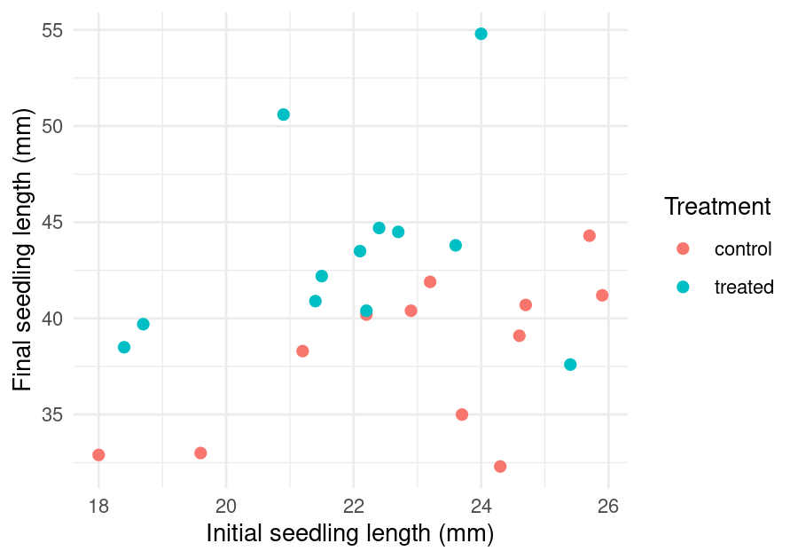

The seedling table is in R. The question is: how much did each plant grow, and did treated plants grow more? In a spreadsheet you would drag a formula down a new column and click a chart together. When a value is corrected next week, you would repeat every step by hand. Here, the new column and the figure come from a few lines of code that you simply run again.
Today you will:
add a calculated column (growth) with mutate();
keep the rows you want with filter() and the columns you want with select();
draw a labelled figure with ggplot(), where each point is one plant;
save the figure and the table as files other programs can open.
This builds on Day 7’s import. On Day 9 the code and the figure go into one report.
Growth is a new column, not an edit
First load the packages: library(readr), library(dplyr), library(ggplot2). (dplyr prints a note about “masked” functions; that is normal.)
Typing size_plot draws the figure on the right in the Plots pane.

Final against initial length for the 24 seedlings, coloured by treatment, as drawn by size_plot.
aes() says which column goes where: x, y and colour. Each point is one plant. geom_point() draws points, labs() names the axes with units, and + adds each part.
Pick the plot that answers your question
Same plants, same x-axis, different y-axis.
Left: final length. Plants that started long tended to end long.
Right: growth. Here, plants that started long tended to grow less.
“Bigger at the end” is not “grew more”. Read the y-axis label before you interpret.
For the transfer study, initial length against final length (left) and against growth (right).
A stock is a solution of known concentration; diluting adds liquid up to a final volume. Stock volume = target × final volume / stock.
D04 needs 100 mL of stock for 50 mL of solution: impossible, because its target (200 mmol/L) is stronger than its stock (100 mmol/L). <= flags it FALSE; keep the row.
Summary
Step
Function
What to check
New column
mutate(growth_mm = final_mm - initial_mm)
One plant by hand (P01: 18.6 mm); the CSV is unchanged
Keep rows
filter(treatment == "control")
Row count (12)
Keep columns
select(plant_id, treatment, growth_mm)
Column count (3); all 24 plants remain
Chain steps
|> (pipe)
Run one step at a time when something breaks
Plot
ggplot(aes(x, y)) + geom_point() + labs()
One point = one plant; y-axis is the quantity you ask about; units in labels
Jitter
position_jitter(width = 0.08, height = 0)
Heights unchanged, no points lost
Save
ggsave() for images, write_csv() for tables
Open the files outside R
Next (Day 9, R Markdown): put the explanation, the code and the figure into one report that rebuilds itself from the data.
Now:open the Day 8 exercises. Leave with day08.R, output/seedling-growth.png and output/seedling-growth.csv, all recreated after restarting R.